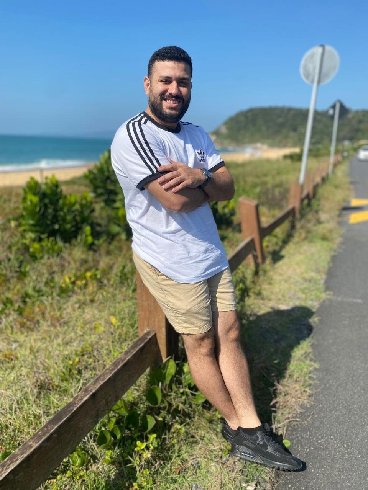

Sobre mim
Olá, sou Thiago Moura, programador na Westack e formando em Análise e Desenvolvimento de Sistemas pela Uniasselvi. Desenvolvo soluções digitais combinando conhecimento técnico, criatividade e atenção às necessidades de cada projeto.
Competências
Tenho experiência na criação de interfaces com HTML e CSS e no desenvolvimento de aplicações com Node.js e React.js. Também trabalho com LLMs e RAG (Retrieval-Augmented Generation), um sistema que utiliza inteligência artificial para consultar informações e gerar respostas mais contextualizadas. Nessa área, integro modelos de linguagem a aplicações e utilizo frameworks e ferramentas que apoiam a construção dessas soluções.
Missão!
Acredito que a tecnologia está sempre evoluindo — e acompanhar essa evolução é essencial para oferecer as melhores soluções. Por isso, busco me manter atualizado e aplicar meus conhecimentos de acordo com os objetivos, o contexto e as necessidades de cada cliente.
Minha missão é transformar tecnologia em soluções práticas, simplificar desafios e contribuir para que cada negócio alcance seus objetivos com mais eficiência.